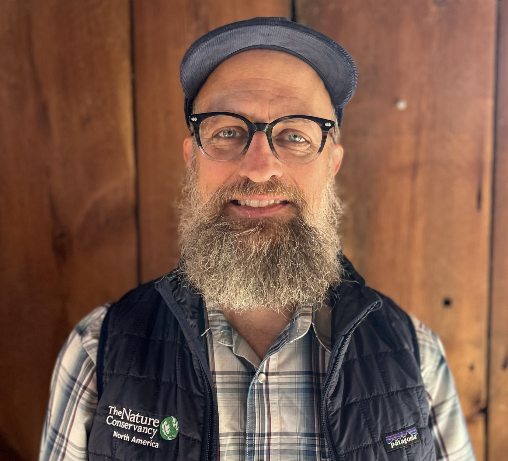

About
Mary Kelly
Mary is a senior undergraduate student at Northern Michigan University (NMU), double-majoring in Environmental Science (natural resources emphasis) and French. Entering her final year of college, Mary leads two NMU student organizations, is an alumna of the NMU Student Leader Fellowship Program, and has interned in the federal government and non-profit conservation spaces. She is a member of the Conservation Data Lab (CDL). Mary’s favorite part of the CDL is being part of a community of people who care for the well-being of the environment. After graduating with her Bachelor’s of Science degree in May 2024, Mary hopes to attend graduate school for a Master’s degree or start working full-time.
Randy Swaty
 Randy is conservation ecologist with 20+ years’ experience working at scales from microbes to landscapes. He uses the best available scientific information combined with strong communication skills to inform decision-makers, influence policy, plan sustainable land management, and increase collaboration. In addition to his full-time position as an ecologist with The Nature Conservancy’s LANDFIRE Team Randy founded and co-leads the Conservation Data Lab.
More information about LANDFIRE
What is LANDFIRE? LANDFIRE, Landscape Fire and Resource Management Planning Tools, is a shared program between the wildland fire management programs of the U.S. Department of Agriculture Forest Service, the U.S. Department of the Interior, and The Nature Conservancy, that provides landscape-scale geo-spatial products, vegetation models and tools to support cross-boundary planning, management, and operations.
LANDFIRE Mission: LF’s mission is to provide agency leaders and managers with a common “all-lands” data set of vegetation and wildland fire/fuels information for strategic fire and resource management planning and analysis.
What does LANDFIRE provide? This multi-partner program produces consistent, comprehensive, geospatial data and databases that describe vegetation, wildland fuel, and fire regimes across the United States and insular areas. Use the LF Definitions Quality and Standards Report to learn how LF creates the data. Use the LANDFIRE Data Dictionary to help locate LF information.
Register for LANDFIRE Office Hours (Last Wed Month, 1 pm ET): https://tnc.zoom.us/meeting/register/tJwvcOqopz4uHNbBBWNoFeLIHpdH8YFO7QLS
Register for the brief LANDFIRE Newsletter: http://eepurl.com/cajG91
Check out LANDFIRE on YouTube: https://www.youtube.com/user/LANDFIREvideo
See recent LANDFIRE Application Highlights: https://arcg.is/1jmKm90
Have a LANDFIRE Question? Get in touch: helpdesk@landfire.gov
Additional Resources
On the Methods page we mentioned several concepts. Below are some supporting resources:
- Peer reviewed journal article about development of the Biophysical Settings models: Blankenship, K., Swaty, R., Hall, K.R., Hagen, S., Pohl, K., Shlisky Hunt, A., Patton, J., Frid, L. and Smith, J., 2021. Vegetation dynamics models: A comprehensive set for natural resource assessment and planning in the United States. Ecosphere, 12(4), p.e03484. https://esajournals.onlinelibrary.wiley.com/doi/pdf/10.1002/ecs2.3484
- Peer reviewed journal article about vegetation departure (i.e., use of succession classes as an ecosystem health metric): Swaty, R., Blankenship, K., Hall, K.R., Smith, J., Dettenmaier, M. and Hagen, S., 2021. Assessing Ecosystem Condition: Use and Customization of the Vegetation Departure Metric. Land, 11(1), p.28. https://www.mdpi.com/2073-445X/11/1/28
- Peer reviewed journal article that uses LANDFIRE data to explore old-growth management in eastern Oregon: Ager, A.A., Vaillant, N.M. and Finney, M.A., 2010. A comparison of landscape fuel treatment strategies to mitigate wildland fire risk in the urban interface and preserve old forest structure. Forest Ecology and Management, 259(8), pp.1556-1570. https://www.sciencedirect.com/science/article/pii/S0378112710000514